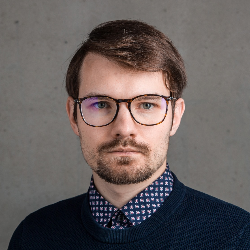

Dāvis Zavickis
Quantitative Finance & Risk · Portfolio Optimization · Scientific Computing & HPC · Ex-Theoretical Physicist
I am a quantitative analyst at the Bank of Latvia, focused on market risk, portfolio optimization, and quantitative modelling of the Bank’s foreign reserves — including an actively managed fixed-income portfolio. I come from computational physics, where I developed novel first-principles methods for electronic-structure theory and scalable, highly efficient code designed to squeeze performance out of high-performance computing systems. Explicitly stating the inherently obvious — give me a proper problem, and I’ll send it to the Moon.
Experience
Quantitative Investment & Risk Analyst
Bank of Latvia — Market Operations Department
11/2023 – Present
- Market-risk evaluation, scenario analysis, performance attribution, and portfolio sensitivity and risk breakdowns.
- Strategic asset allocation and portfolio optimization.
- Multi-year budget modelling of expected portfolio profit.
- Development of analytics, data pipelines, and code, and maintenance of the underlying databases.
Senior Expert
University of Latvia — Faculty of Physics, Mathematics and Optometry
07/2024 – 02/2026
- Developed (and subsequent teaching of) a study course on Quantum Transport & Topological Insulators incl. complete lecture materials, lab work with Jupyter notebooks on bands structure calculations, conductivity quantization in QPC & more.
Research Assistant
University of Latvia — Faculty of Physics, Mathematics and Optometry
06/2021 – 12/2023
- Developed and implemented novel first-principles methods in “exciting,” a full-potential all-electron density-functional-theory (DFT) software package employing linearised augmented plane waves (LAPW).
- Optimized and parallelized (Vectorization + OpenMP + MPI) code routines for Fock-Exchange operator calculations and GW.
Data Scientist
Latvian Environment, Geology and Meteorology Centre — Dept. of Climate and Numerical Modelling
02/2018 – 12/2021
- Developed deterministic and ensemble weather-forecast post-processing methods and built the associated post-processing system.
- Automated a range of operational products, including an alert system for hazardous weather conditions, data-aggregation procedures, and statistical data analysis.
Engineer
Institute of Solid State Physics, University of Latvia — Laboratory of Kinetics in Self-Organizing Systems
03/2017 – 06/2021
- Kinetic Monte Carlo modelling of bimolecular processes in condensed-matter systems.
- Electronic structure calculations using density-functional theory methods.
- Theoretical prediction of novel materials for intermediate-temperature proton-conducting ceramic fuel cells.
I received my BSc and MSc in physics, both with distinction, from the University of Latvia, including an exchange semester at Umeå University, Sweden. My research interests include density-functional theory, electronic-structure methods, high-performance scientific computing, and in-depth statistical approaches.
Education
2021–2023
PhD studies in Physics (paused)
University of Latvia — Thesis: precise first-principles electronic-structure methods
2018–2020
MSc in Physics, with distinction
University of Latvia
2015–2018
BSc in Physics, with distinction
University of Latvia — incl. exchange semester at Umeå University, Sweden
Publications
2025
M. Azizi, F. Delesma, M. Giantomassi, D. Zavickis, M. Kuisma, K. S. Thygesen, D. Golze, A. Buccheri, M. Zhang, P. Rinke, C. Draxl, A. Gulans, X. Gonze, “Precision benchmarks for solids: G0W0 calculations with different basis sets,” Computational Materials Science 250, 113655
2022
D. Zavickis, K. Kacars, J. Cimurs, A. Gulans, “Adaptively compressed exchange in the linearized augmented plane wave formalism,” Phys. Rev. B 106, 165101
2021
D. Zavickis, G. Zvejnieks, A. Chesnokov, D. Gryaznov, “Single oxygen vacancy in BaCoO3: hybrid DFT calculations and local site symmetry approach.”
2021
G. Zvejnieks, D. Zavickis, D. Grjaznovs, J. Kotomins, “BaCoO3 monoclinic structure and chemical bonding analysis; hybrid DFT calculations,” Physical Chemistry Chemical Physics
Acknowledged Contributions
2025
Acknowledged for work on multivariate cumulants in: J. Shaju, E. Pavlovska, R. Suba et al., “Evidence of Coulomb liquid phase in few-electron droplets,” Nature 642, 928–933
Presentations
Oct 2023
NOMAD CoE Summer School (Paphos, Cyprus) — D. Zavickis, “Low-rank methods in LAPW and outlook to Libxc-X”
Oct 2023
NOMAD CoE Summer School (Paphos, Cyprus) — hands-on tutorial hosted on cluster: “Converging GW using local orbitals”
Aug 2023
HoW exciting! 2023 (Humboldt-Universität zu Berlin) — D. Zavickis, K. Kacars, J. Cimurs, A. Gulans, “Adaptively compressed exchange in LAPW”
May 2023
BiGmax/NOMAD Summer School (Cap Roig, Spain) — D. Zavickis, K. Kacars, J. Cimurs, A. Gulans, poster: “Massively parallel adaptively compressed exchange in LAPW”
Mar 2023
DPG-Frühjahrstagung 2023 (Dresden, Germany) — D. Zavickis, K. Kacars, J. Cimurs, A. Gulans, “Adaptively compressed exchange in LAPW”
Aug 2022
Psi-k 2022 (EPFL, Lausanne) — D. Zavickis, K. Kacars, J. Cimurs, A. Gulans, “Adaptively compressed exchange in LAPW”
Feb 2021
37th Scientific Conference of ISSP UL — D. Zavickis, G. Zvejnieks, D. Grjaznovs, E.A. Kotomins, “Co jona magnētiskā stāvokļa un lokālās apkārnes raksturošana BaCoO3-x perovskītā”
Oct 2020
FM&NT-2020 (Vilnius, Lithuania) — D. Zavickis, G. Zvejnieks, D. Grjaznovs, E.A. Kotomins, “Characterization of Co ion oxidation state and local structural distortions in BaCoO3-x”
Feb 2020
36th Scientific Conference of ISSP UL — D. Zavickis, G. Zvejnieks, D. Grjaznovs, E.A. Kotomins, “Co jona magnētiskā stāvokļa un lokālās apkārtnes raksturošana BaCoO3 perovskītā ar skābekļa vakancēm”
May–Jun 2019
Bunsentagung 2019 (Jena, Germany) — G. Zvejnieks, D. Zavickis, D. Grjaznovs, E.A. Kotomins, “The electronic structure of LaCoO3 and BaCoO3 perovskites”
Feb 2019
35th Scientific Conference of ISSP UL — D. Zavickis, G. Zvejnieks, “Fe un Co jonu magnētisko stāvokļu raksturošana (Ba,La)(Fe,Co)O3 perovskītos”
Feb 2018
34th Scientific Conference of ISSP UL — D. Zavickis, G. Zvejnieks, “Y2O3 agregatizācijas pētījumi 2D dzelzs režģī: kinētiskā monte karlo modelēšana”
Research Projects
2021–now
Novel Materials Design Centre of Excellence (NOMAD CoE) · Researcher
EU Horizon 2020 research & innovation programme — grant agreement No. 951786
2020
Precise Fock Exchange (PREFEX) · Researcher
Latvian Council of Science — grant agreement LZP-2020/2-0251
2018
Theoretical prediction of new materials for intermediate-temperature ceramic fuel cells · Researcher
Latvian Council of Science — grant agreement LZP-2018/1-0147
Teaching & Outreach
Alongside research, I have spent six years involved with the Latvian physics olympiad community — as team leader for the Latvian national team at the European and International Physics Olympiads, a member of the Academic Committee for the European and Nordic-Baltic Physics Olympiads, and an organiser of training sessions for Latvia’s olympiad candidates. I have also trained Latvian high-school teachers in using ARANET sensor systems in the classroom.
Tech Stack
Languages
Python · Fortran (77/90) · R · Visual Basic · C++ (working knowledge)
Scientific & numerical
MATLAB/Simulink · Wolfram Mathematica · numerical methods
Python libraries
All common ones + PyTorch · JAX · Dash
Web
Django · React (enough to get by)
HPC & performance
MPI · OpenMP · vectorization · Slurm · PBS · HPC clusters
Systems & shell
Linux/UNIX · Bash scripting
Databases
Microsoft SQL Server (T-SQL) · SQLite
Containers & deployment
Docker · Docker Compose · nginx · AWS EC2
Languages
Latvian (native) · English (B2) · German (B1) · Swedish (A1)